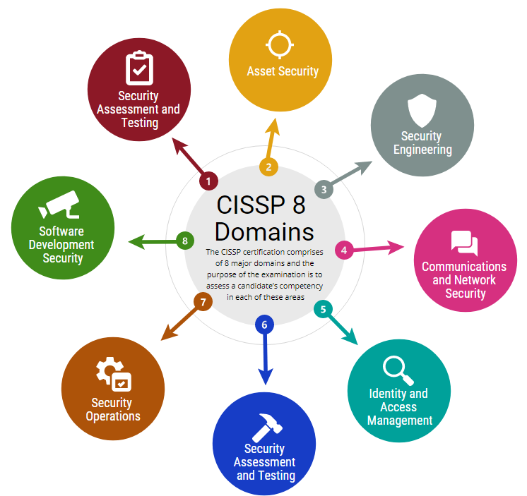

CISSP 8 Security Domains
Security And Risk Management
The CISSP Exam weighs up around 15% on average. This CISSP domain consists of most of the content, providing you with an overview of the information systems management you need to know. It comprises:
- Understand professional ethics
- Security governance principles and concepts
- Compliance and other requirements
- Understanding legal and regulatory issues in the context of Information security
- Personnel security policies and procedures
- Risk-based management concepts
Asset Security
Asset Security comprises about 10% of the CISSP exam. This domain addresses the physical requirements of information security. It covers:
- The classification and ownership of information and assets;
- Privacy;
- Retention periods;
- Data security controls; and
- Handling requirements.
Security Architecture and Engineering
Security Engineering comprises about 13% of the CISSP exam. This domain covers several important information security concepts, including:
- Engineering processes using secure design principles;
- Fundamental concepts of security models;
- Security capabilities of information systems;
- Assessing and mitigating vulnerabilities in systems;
- Cryptography; and
- Designing and implementing physical security.
Communications and Network Security
Communications and Network Security comprises about 13% of the CISSP exam. This domain covers the design and protection of an organisation’s networks. This includes:
- Secure design principles for network architecture;
- Secure network components; and
- Secure communication channels.
Identity and Access Management
Identity and Access Management comprises about 14% of the CISSP exam. This domain helps information security professionals understand how to control the way users can access data. It covers:
- Physical and logical access to assets;
- Identification and authentication;
- Integrating identity as a service and third-party identity services;
- Authorisation mechanisms; and
- The identity and access provisioning lifecycle.
Security Assessment and Testing
Security Assessment and Testing comprises about 12% of the CISSP exam. This domain focuses on the design, performance and analysis of security testing. It includes:
- Designing and validating assessment and test strategies;
- Security control testing;
- Collecting security process data;
- Test outputs; and
- Internal and third-party security audits.
Security Operations
Security Operations comprises about 13% of the CISSP exam. This domain addresses the way plans are put into action. It covers:Security Operations comprises about 13% of the CISSP exam. This domain addresses the way plans are put into action. It covers:
- Understanding and supporting investigations;
- Requirements for investigation types;
- Logging and monitoring activities;
- Securing the provision of resources;
- Foundational security operations concepts;
- Applying resource protection techniques;
- Incident management;
- Disaster recovery;
- Managing physical security; and
- Business continuity.
Software Development Security
Software Development Security comprises about 10% of the CISSP exam. This domain helps professionals to understand, apply and enforce software security. It covers:
- Security in the software development life cycle;
- Security controls in development environments;
- The effectiveness of software security; and
- Secure coding guidelines and standards.